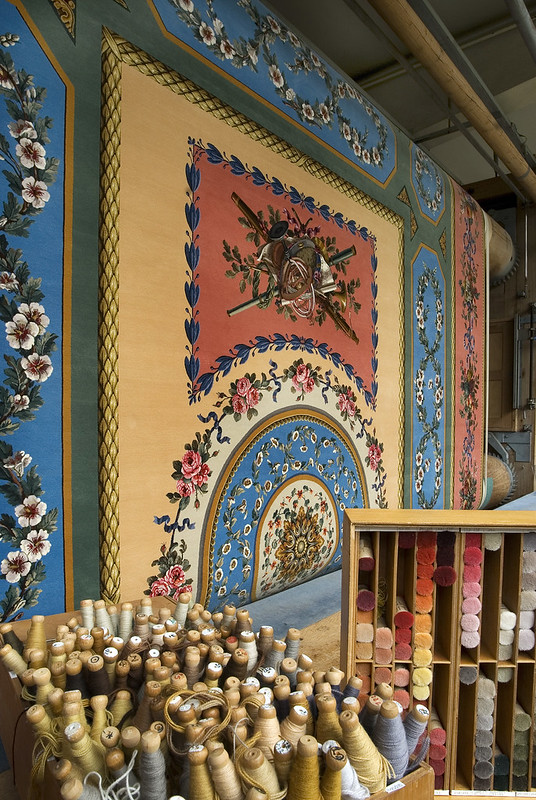

Des origines parisiennes sous Henri IV. L'histoire de la Savonnerie commence bien avant l'ouverture de l'atelier de Lodève. Au début du XVIIe siècle, Henri IV encourage en France la fabrication de tapis noués « façon de Perse et du Levant » afin de limiter l'importation de coûteux tapis orientaux et de développer des productions de luxe capables de servir le prestige de la monarchie. Des ateliers sont d'abord installés dans les galeries du Louvre.
Sous Louis XIII, les ateliers se développent au pied de la colline de Chaillot, dans des bâtiments précédemment occupés par une fabrique de savon. Le nom de « Savonnerie » finit par désigner la manufacture elle-même puis, par extension, les tapis de velours réalisés selon sa technique caractéristique du point noué. Au XVIIe siècle, la production est étroitement liée au décor des résidences royales et à la politique artistique de la monarchie.
L'âge de Colbert et de Charles Le Brun. En 1663, Colbert réorganise la Savonnerie et la place sous la direction artistique de Charles Le Brun, premier peintre du roi et figure centrale des grands décors de Louis XIV. La manufacture connaît alors une période particulièrement brillante. Ses tapis, réservés à la Couronne, sont destinés aux palais royaux ou offerts comme présents diplomatiques. Ils participent ainsi, au même titre que les tapisseries des Gobelins, à la représentation du pouvoir monarchique français.
Au fil des siècles, la Savonnerie traverse les changements de régime sans perdre son savoir-faire. Elle est rattachée en 1826 au site des Gobelins. Son répertoire évolue avec les goûts et les commandes publiques : aux grands décors historiques succèdent progressivement des créations inspirées par les artistes de leur temps. Au XXe siècle, la manufacture interprète notamment des modèles de grands peintres, plasticiens, architectes et designers, perpétuant une tradition dans laquelle le licier ne reproduit pas mécaniquement une image mais la traduit dans le langage propre du textile et du point noué.

Un métier vertical dans les ateliers de la Manufacture de la Savonnerie, à Lodève
1962-1964 : une implantation née de l'histoire de la décolonisation. L'atelier lodévois possède une origine très particulière. Après la guerre d'Algérie et l'arrivée en métropole de familles de harkis et d'autres Français ayant quitté l'Algérie, un atelier de tissage est d'abord installé à Saint-Maurice-l'Ardoise, dans le Gard. Le projet vise notamment à favoriser l'insertion professionnelle de femmes françaises d'origine nord-africaine. En 1964, sur décision d'André Malraux, alors ministre des Affaires culturelles, l'atelier est créé à Lodève.
Le choix de Lodève prend une signification particulière dans une ville profondément marquée par plusieurs siècles d'industrie drapière. Même si la technique de la Savonnerie est distincte de l'ancienne production de draps lodévoise, cette implantation réintroduit dans la cité un atelier textile d'État et inscrit un savoir-faire national dans un territoire possédant une forte mémoire ouvrière et lainière.
1965 : rattachement au Mobilier national. Dès 1965, l'atelier est rattaché à l'Administration du Mobilier national et devient l'annexe lodévoise de la Manufacture de la Savonnerie. Il partage dès lors avec l'atelier parisien la mission de réaliser des tapis destinés aux collections publiques et à l'ameublement des palais, résidences et bâtiments officiels. Les œuvres produites entrent dans les collections nationales : l'inventaire du Mobilier national utilise d'ailleurs depuis 1966 une marque spécifique pour les tapis de Lodève.
Le point noué, héritage technique de la Savonnerie. Contrairement à une tapisserie classique, le tapis de Savonnerie est un tapis de velours. Il est exécuté sur un métier vertical. Le licier ou la licière travaille sur l'endroit de l'ouvrage et noue les fils de laine autour des fils de chaîne. Chaque rangée de nœuds est ensuite tassée et le velours est progressivement égalisé. Cette technique exige une grande précision dans le dessin, les changements de couleurs, la densité et la hauteur du velours.
Avant le tissage, le modèle de l'artiste doit être interprété et transposé à l'échelle d'exécution. Le travail suppose une analyse attentive des formes, des valeurs et des couleurs. Le carton ou le modèle accompagne ensuite le licier pendant les mois, voire les années nécessaires à la réalisation de certaines pièces monumentales. La lenteur du procédé explique le caractère exceptionnel de chaque tapis : une œuvre de grandes dimensions représente un investissement considérable de temps et de savoir-faire.
La création contemporaine au cœur de la mission. La Savonnerie n'est pas seulement un conservatoire de techniques anciennes. Les ateliers de Paris et de Lodève interprètent des œuvres de créateurs contemporains. Au cours des dernières décennies, la manufacture a travaillé d'après des artistes tels que Victor Vasarely, Georges Mathieu, Zao Wou-Ki, Pierre Soulages, Pierre Alechinsky ou encore des architectes et designers. Cette confrontation entre une technique plusieurs fois centenaire et la création actuelle constitue l'une des singularités majeures des manufactures nationales.
Le travail du licier est donc un véritable travail d'interprétation. Une peinture, un dessin ou une maquette doivent devenir une surface textile : les nuances sont traduites en fils, les contours adaptés à la structure du nouage et les effets picturaux reconstruits par la matière. Les laines et leurs nombreuses tonalités permettent d'obtenir des passages colorés d'une grande subtilité. Une fois achevé, le tapis reçoit la marque de la manufacture, garantie de sa provenance et de la continuité du savoir-faire.
1989 : des ateliers conçus pour les liciers. En 1989, l'atelier de Lodève s'installe dans des bâtiments neufs dessinés par l'architecte Philippe Dubois. Leur conception répond directement aux contraintes du métier : grands volumes, lumière abondante, espace nécessaire aux métiers verticaux et circulation adaptée autour d'œuvres parfois monumentales. L'architecture contemporaine devient ainsi l'écrin d'une technique héritée du XVIIe siècle.
Une manufacture d'État toujours vivante. L'atelier de Lodève appartient pleinement au réseau des manufactures nationales. Il ne s'agit ni d'un musée figé ni d'une reconstitution : les liciers et licières y produisent réellement des œuvres pour l'État. Les collections et archives du Mobilier national conservent la trace de cette activité, de l'organisation des ateliers aux dossiers de fabrication, aux matières premières et aux commandes artistiques.
Depuis la réorganisation institutionnelle récente réunissant Sèvres et le Mobilier national au sein des Manufactures nationales, la Savonnerie de Lodève poursuit cette double mission : préserver un métier d'art exceptionnel et le confronter à la création de son époque. Plus de soixante ans après son implantation dans l'Hérault, elle constitue ainsi un lien singulier entre l'histoire sociale de la France des années 1960, la tradition textile de Lodève, le patrimoine artistique de l'État et la création contemporaine.
Ici, le temps se mesure en tombée de métier, et le travail de la main est virtuose.
— Office de Tourisme Lodévois & Larzac
🥾
Visite pratique
⏱️
Durée
Environ 1h, visite guidée uniquement
📊
Difficulté
Facile · accessible à tous
🚗
Accès
Impasse des Liciers, 34700 Lodève
🎟️
Tarif
10 € plein tarif · 7 € réduit · gratuit -12 ans
✦ Infos pratiques
Réservation Obligatoire, auprès de l'Office de Tourisme Lodévois & Larzac
Horaires Jeudi et vendredi à 14h toute l'année
Vacances scolaires Créneaux supplémentaires jeudi 10h30 et 15h30, vendredi 10h30
Téléphone 04 67 88 86 44
Groupes Acceptés, 25 personnes maximum par visite
Sur place Aucune billetterie ni vente de billets à l'atelier
1
Le film d'introduction
Présentation de l'histoire des manufactures nationales et des techniques de haute lisse et de basse lisse.
2
Les ateliers en activité
Observation, accompagnée d'un guide conférencier, des liciers et licières au travail sur leurs métiers à tisser verticaux.
3
La salle d'exposition
Présentation de tapis achevés, de style ou contemporains, avant leur envoi vers les palais nationaux.
4
Les échantillons de laine
Découverte des palettes de couleurs et des matières utilisées pour le nouage des tapis.
🏆
Reconnaissance & patrimoine
🏛️
Manufacture nationale
Statut d'État : les liciers et licières sont des fonctionnaires, techniciens d'art ou chefs de travaux d'art, placés sous la tutelle du ministère de la Culture.
Ministère de la Culture
🧵
Unique annexe des Gobelins
Seul atelier de tapis noués de la Savonnerie en dehors de Paris, perpétuant une technique transmise depuis plus de quatre siècles.
Depuis 1964
🏺
Manufactures nationales - Sèvres & Mobilier national
Depuis 2025, la Savonnerie de Lodève est rattachée à ce nouvel établissement public, aux côtés des Gobelins et de Beauvais.
Depuis 2025
🧵
Savoir-faire & artisans
Une vingtaine de techniciens d'art travaillent aujourd'hui dans les ateliers lodévois, où chaque tapis en velours de laine noué à la main demande, selon sa taille et sa complexité, d'une à sept années de travail. Ces pièces ne sont jamais commercialisées : elles sont exclusivement destinées à meubler les palais et grands bâtiments de l'État — Élysée, ambassades, Panthéon, monuments nationaux.
Si l'atelier tisse encore quelques copies de tapis anciens venant remplacer des pièces fragilisées par le temps, il interprète surtout, depuis les années 1960, des cartons commandés à des créateurs contemporains : peintres comme Victor Vasarely, Georges Mathieu, Zao Wou-Ki, Pierre Soulages ou Pierre Alechinsky, mais aussi architectes et designers. Les monogrammes tissés dans chaque tapis en garantissent la provenance.
L'histoire humaine de l'atelier reste indissociable de sa vocation d'origine : l'insertion, à partir de 1962, de femmes françaises d'origine nord-africaine ayant quitté l'Algérie avec leurs familles harkies. Plusieurs générations d'une même famille se sont depuis succédé aux métiers à tisser, faisant de la Savonnerie de Lodève un lieu de mémoire autant qu'un atelier d'excellence.
📍
Aux alentours
Lodève tout autour de la manufacture, l'ancienne cité épiscopale conserve sa cathédrale Saint-Fulcran et le musée de Lodève, consacré aux beaux-arts et à la préhistoire.
Manufacture Royale de Villeneuvette à une vingtaine de minutes, cet autre village-manufacture textile de l'Hérault, fondé en 1673, prolonge naturellement la découverte du patrimoine drapier du Clermontais.
Lac du Salagou à quelques minutes de route, ses terres rouges de ruffe et son plan d'eau turquoise offrent une pause nature après la visite des ateliers.
Prieuré Saint-Michel de Grandmont à 8 km sur le plateau, ce site monastique paisible du XIIe siècle mérite un détour, tout comme les sites templiers et hospitaliers du Larzac, à une vingtaine de kilomètres.